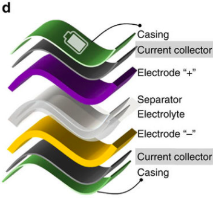
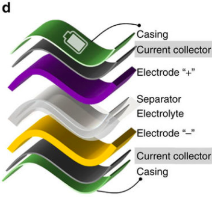

s
Supercapacitor of the Future
Advantages of Proposed Supercapacitor
| Performance | Safety |
|---|---|
| - Greater charge and discharge rate (greater power density) | - Wider temperature operation range (-40° C to 120° C) |
| - Increased capacitance (greater energy density) due to the high surface area of the trilayer, close proximity of electrodes, and high ionically conductive separators and electrolytes | - No dendrite branches because no Lithium and electrochemical reactions to build up gunk in the cell |
| - More charge/discharge cycles due to no component degradation from electrochemical reactions | - High thermal resistance in materials used (more resistant to internal heat and thermal conductivity) |
 

This proposed supercapacitor combines several new technologies such as trilayer electrodes, heterogeneous current collectors, the ABA stacking method, resin-bonded cellulose separators, and ionic liquid based gel polymer electrolyte. These technologies are utilized in order to combat the current limitations of lithium ion batteries and capacitors. Several components contribute to an increase in capacitance (electrodes, stacking method) and conductivity (separators, electrolyte) , whereas other components minimize thermal runaway (current collector). This supercapacitor has the capability to replace lithium-ion batteries entirely if the components become mass producible; examples of applications include: regerative braking, powering generators for the power grid, pacemakers, defense systems, portable technology, storing solar power, powering AI, etc. Overall, we believe the world can benefit in several ways from the use of this supercapacitor because of it's performance and safety improvements over previous generation technologies.